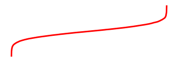

Special content blocks with MyST¶
A common use of directives and roles is to designate “special blocks” of your content. This allows your to include more complex information such as warnings and notes, citations, and figures. This section covers a few common ones.
Images¶
You can add images with more control using MyST markdown.
If you’d like more control over an image, use the following MyST markdown syntax:
```{image} ../images/cool.jpg
:alt: cool!
:height: 100px
```
This allows you to control aspects of the image with directive arguments. For example, here we have controlled both the alternative text as well as the height of the image. Using html to control your image appearance is discouraged. If you insist, read more about using raw html in Markdown.
For a list of all of the options you can supply to image, see the
reStructured Text image documentation.
Notes, warnings, and other admonitions¶
Let’s say you wish to highlight a particular block of
text that exists slightly apart from the narrative of your page. You can
use the {note} directive for this.
For example, the following text:
```{note}
Here is a note!
```
Results in the following output:
Note
Here is a note!
There are a number of similarly-styled blocks of text. For example, here is a {warning}
block:
Warning
Here’s a warning! It was created with:
```{warning}
```
For a complete list of options, see the sphinx-book-theme documentation.
Blocks of text with custom titles¶
You can also choose the title of your message box by using the
{admonition} directive. For example, the following text:
```{admonition} Here's your admonition
Here's the admonition content
```
Results in the following output:
Here’s your admonition
Here’s the admonition content
If you’d like to style these blocks, then use the :class: option. For
example:
This admonition was styled…
Using the following pattern:
```{admonition} My title
:class: tip
My content
```
Interactive admonitions with dropdowns¶
You can also hide the body of your admonition blocks so that users must click a button to reveal their content. This is helpful if you’d like to make a point that isn’t immediately visible to the user.
To hide the body of admonition blocks, add a “dropdown” class to them, like so:
```{note}
:class: dropdown
The note body will be hidden!
```
results in:
Note
The note body will be hidden!
You can use this in conjunction with {admonition} directives to include your
own titles and stylings. For example:
```{admonition} Click the + sign to see what's inside
:class: dropdown, tip
Here's what's inside!
```
results in:
Click the + sign to see what’s inside
Here’s what’s inside!
Insert code cell outputs into admonitions¶
If you’d like to insert the outputs of running code inside admonition blocks, we recommend using Glue functionality. For example, we’ll insert one of the outputs that was glued into the book from the page Insert code outputs into page content.
The below code:
```{note}
Here's my figure:
{glue:figure}`sorted_means_fig`
```
generates:
Note
Here’s my figure: 
See Insert code outputs into page content for more information on how to use Glue to insert your outputs directly into your content.
Tip
To hide code input and output that generated the variable you are inserting, use the remove_cell tag.
See Hide or remove content for more information and other tag options.
Quotations and epigraphs¶
Quotations and epigraphs provide ways to highlight information given by others. They behave slightly differently.
Regular quotations are controlled with standard markdown syntax, i.e., by
putting a caret (>) symbol in front of one or more lines of text. For example,
the following quotation:
Here is a cool quotation.
From me, Jo the Jovyan
Was created with this text:
> Here is a cool quotation.
>
> From me, Jo the Jovyan
Epigraphs draw more attention to a quote and highlight its author. You should keep these relatively short so that they don’t take up too much vertical space. Here’s how an epigraph looks:
Here is a cool quotation.
From me, Jo the Jovyan
Was generated with this markdown:
```{epigraph}
Here is a cool quotation.
From me, Jo the Jovyan
```
You can provide an attribution to an epigraph by adding -- to the final line, followed
by the quote author. For example:
Here is a cool quotation.
—Jo the Jovyan
Was generated with this markdown:
```{epigraph}
Here is a cool quotation.
-- Jo the Jovyan
```
Footnotes¶
You can include footnotes in your book’s content using a standard markdown syntax. This will include a numbered reference to the footnote in-line, and insert the footnote to a list of footnotes at the bottom of the page.
To create a footnote, first insert a reference in-line with this syntax: [^mylabel].
Then, define the text for that label like so:
[^mylabel]: My footnote text.
You can define [^mylabel] anywhere in the page, though its definition will always
be placed at the bottom of your built page. For example, here’s a footnote 1
and here’s another one 2. You can click either of them to see the footnotes
at the bottom of this page.
Glossaries¶
Glossaries allow you to define terms in a glossary, and then link back to the glossary throughout your content. You can create a glossary with the following syntax:
```{glossary}
term one
An indented explanation of term 1
A second term
An indented explanation of term2
```
which creates:
- term one
An indented explanation of term 1
- A second term
An indented explanation of term2
To reference terms in your glossary, use the {term} role. For example,
{term}`term one` becomes term one. And {term}`A second term`
becomes A second term.
Citations and cross-references¶
You can add citations and cross-references to your book’s content. See Citations and cross-references for more information.
Page layout and sidebar content¶
You can also use MyST to control various aspects of the page layout. For more information on this, see Control the page layout.
- 1
Here’s the text of my first note.
- 2
And the text of my second note. Note that you can include markdown footnote definitions.